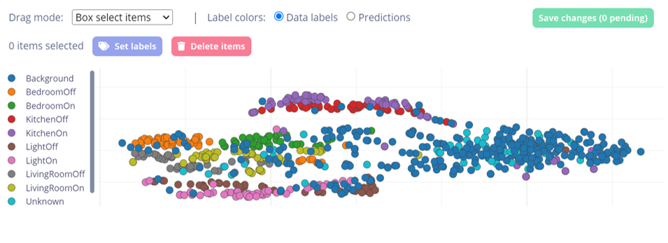

GitHub Repo: https://github.com/Callum-OP/Voice-Controlled-Light
Edge Impulse, Arduino, C++
University Assignment: A C++ machine learning model for controlling lights through voice commands using a Arduino Nano 33 BLE Sense and Edge Impulse to train and compile the model. Trained model on audio collected manually through the Arduino mic. Downloaded model on to Arduino, modified Arduino code so that it would light up different LEDs depending on which words were detected, tested model and it worked well.
The system had originally been very accurate but the more phrases I added that were similar such as; Bedroom Light vs Livingroom Light, then the more likely the model will mix the words up. I may have made this more complicated by using multiple command phrases and could be better off with more unique command words. Either way the model had 70% accuracy when tested live despite a low number of audio samples.
Features:Screenshots of Edge Impulse and arduino IDE:
{kind=link}
{kind=link}
{kind=link}
{kind=link}
{kind=link}